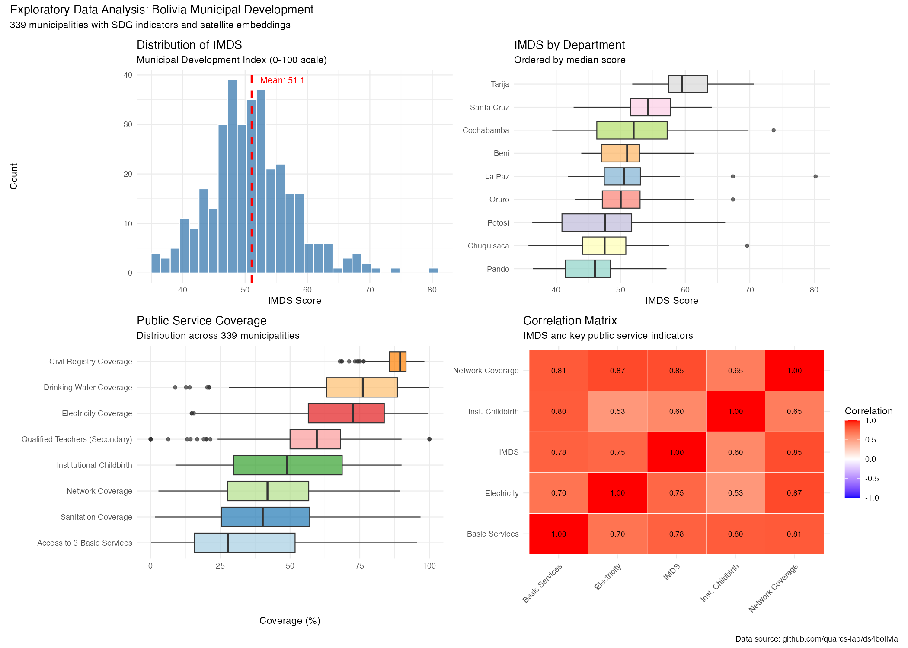

Bolivia’s Municipal Development Indicators
2026-01-18
Dataset: Bolivia’s Municipal Development Indicators
| Category | Count | Examples |
|---|---|---|
| Administrative | 4 | Municipality name, department |
| SDG Indices | 18 | IMDS, index_sdg1-17 |
| SDG Variables | 66 | Public services, health, education |
| Satellite Embeddings | 64 | A00-A63 (image features) |
Total: 152 variables
Overall Statistics:
| Statistic | Value |
|---|---|
| N | 339 |
| Mean | 51.05 |
| Std Dev | 6.77 |
| Min | 35.70 |
| Median | 50.50 |
| Max | 80.20 |
The distribution is roughly symmetric with slight right skew.
| Department | N | Mean | SD | Min | Median | Max |
|---|---|---|---|---|---|---|
| Tarija | 11 | 60.6 | 5.5 | 51.8 | 59.5 | 70.6 |
| Santa Cruz | 56 | 54.3 | 4.8 | 42.7 | 54.2 | 64.1 |
| Cochabamba | 47 | 52.5 | 8.5 | 39.4 | 52.0 | 73.7 |
| La Paz | 87 | 51.0 | 5.4 | 41.8 | 50.5 | 80.2 |
| Oruro | 35 | 50.7 | 5.0 | 42.9 | 50.0 | 67.4 |
| Beni | 19 | 50.5 | 4.5 | 43.9 | 51.0 | 61.3 |
| Chuquisaca | 29 | 47.8 | 6.6 | 35.7 | 47.5 | 69.6 |
| Potosi | 40 | 47.4 | 7.6 | 36.3 | 47.6 | 66.2 |
| Pando | 15 | 45.4 | 5.6 | 36.4 | 46.0 | 57.1 |
Highest Development:
Eastern lowlands and southern regions
Lowest Development:
Northern Amazon and highland mining regions
Gap: 15.2 points between highest and lowest department means
| Variable | Description | Mean | SD | Min | Max |
|---|---|---|---|---|---|
| sdg16_9_cr | Civil Registry | 88.4 | 5.1 | 67.9 | 98.2 |
| sdg6_1_dwc | Drinking Water | 73.6 | 18.3 | 8.8 | 99.9 |
| sdg7_1_ec | Electricity | 69.3 | 18.6 | 14.7 | 99.4 |
| sdg4_c_qts | Qualified Teachers | 57.4 | 16.5 | 0.0 | 100.0 |
| sdg3_1_idca | Institutional Birth | 49.4 | 21.8 | 8.9 | 90.0 |
| sdg9_c_mnc | Network Coverage | 43.1 | 18.9 | 2.8 | 89.4 |
| sdg6_2_sc | Sanitation | 41.9 | 21.8 | 1.5 | 96.8 |
| sdg1_4_abs | 3 Basic Services | 34.4 | 24.0 | 0.1 | 95.6 |
High Coverage (>70%):
Administrative and water services well-established
Low Coverage (<50%):
Infrastructure gaps remain
High variability in most indicators (SD = 16-24%)
Range Analysis:
| Indicator | Min | Max | Range |
|---|---|---|---|
| Drinking Water | 8.8% | 99.9% | 91.1 |
| 3 Basic Services | 0.1% | 95.6% | 95.5 |
| Sanitation | 1.5% | 96.8% | 95.3 |
| Electricity | 14.7% | 99.4% | 84.7 |
Large within-country disparities in basic service access
64 features extracted from 2017 satellite imagery
| Statistic | Value |
|---|---|
| Features | 64 (A00-A63) |
| Overall Mean | -0.022 |
| Overall SD | 0.106 |
| Range | [-0.358, 0.377] |
Features are roughly centered around zero with moderate variance.
| Rank | Feature | Variance |
|---|---|---|
| 1 | A07 | 0.0199 |
| 2 | A23 | 0.0192 |
| 3 | A58 | 0.0158 |
| 4 | A61 | 0.0109 |
| 5 | A04 | 0.0108 |
| 6 | A54 | 0.0107 |
| 7 | A62 | 0.0105 |
| 8 | A35 | 0.0101 |
| 9 | A11 | 0.0096 |
| 10 | A31 | 0.0094 |

Development Patterns:
Service Coverage:
Repository: github.com/quarcs-lab/ds4bolivia
Variables:
Analysis Code: code/01_eda.R
Questions?
Contact:
Carlos Mendez
Project:
claude4data
EDA: Bolivia Municipal Development